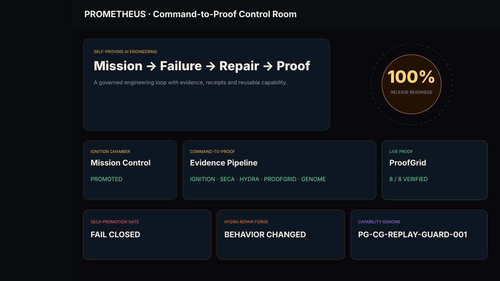

PROMETHEUS AGENT HANDOFF FABRICCOMMAND-TO-PROOF MESH
LIVE REPLAY BUS
PACKET AND EVIDENCE STREAMDETERMINISTIC PUBLIC SNAPSHOT
OLYMPIAN CONSOLE · PUBLIC COMPETITION NODE
SELF-PROVING AI ENGINEERING
It does not merely generate code. It challenges unsupported success, repairs demonstrated failures, proves the repair, and preserves successful engineering knowledge for reuse.
Built with Codex. Governed by PROMETHEUS. Proven by evidence.
PROMETHEUS · LIVING MISSION OBSERVATORY
This always-on judge view exposes the verified Command-to-Proof sequence before the full-screen replay even begins.
JUDGE CHALLENGE MODE
The command deck exposes the exact local verification path for independent inspection.
python -m prometheus.cli receipt verify artifacts/competition-demo/FINAL_RECEIPT.json
IGNITION CHAMBER
COMMAND-TO-PROOF
LIVE PROOF
THE CHAIN HOLDS
REPAIR FORGE
FLAME PRESERVED
FLAME CARRIED FORWARD
The repair strategy is reused on a different artifact and operation, converting one failed action into zero failed actions.
PROMETHEUS PROOF ORGANS
The competition surface stays focused on PROMETHEUS, its verification organs, its memory layer, and Build Truth.
SCREENSHOTS

Open full-resolution interface capture →DOCUMENTATION
ALWAYS-AVAILABLE DELIVERY CHAIN
Press launch to watch the system discover a real failure, deny its own promotion, repair the defect, prove the repair, and reuse the capability.
PROOFGRID VERDICT
{kind=link}